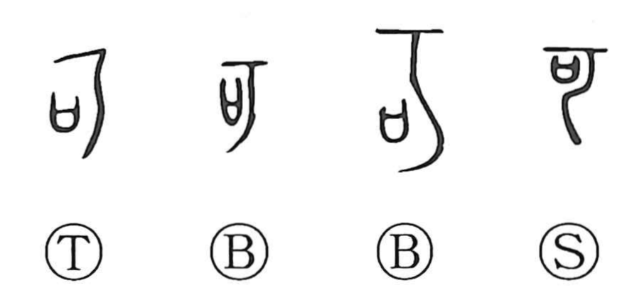

可

Kun: yoshi, beki | On: ka
can ・ possible ・ approve
Explanation
可 brings a wooden branch against 口, a vessel containing a prayer. The vessel is struck while the worshipper presses the god to make the petition come true. The appeal has the force of a demand: the wished-for result must be granted.
The answering assent is the god’s permission or approval. 可 therefore means ‘acceptable,’ ‘permitted,’ or ‘may,’ while the force of the original demand also gives ‘should’ or ‘must.’
The related 呵 preserves the sharp voice of pressing or reproaching, and the prayer’s intoned appeal connects with 歌. In the ordinary uses of 可, the old exchange between forceful request and granted assent becomes approval and possibility.